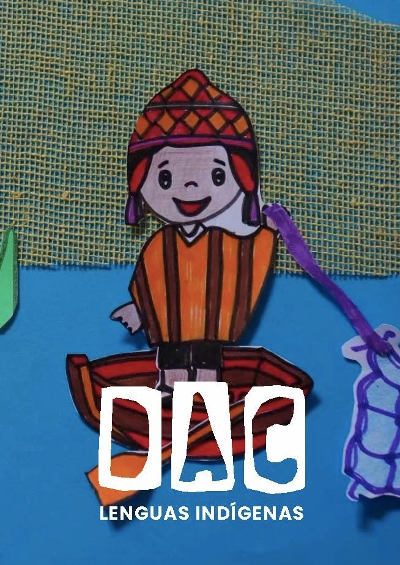
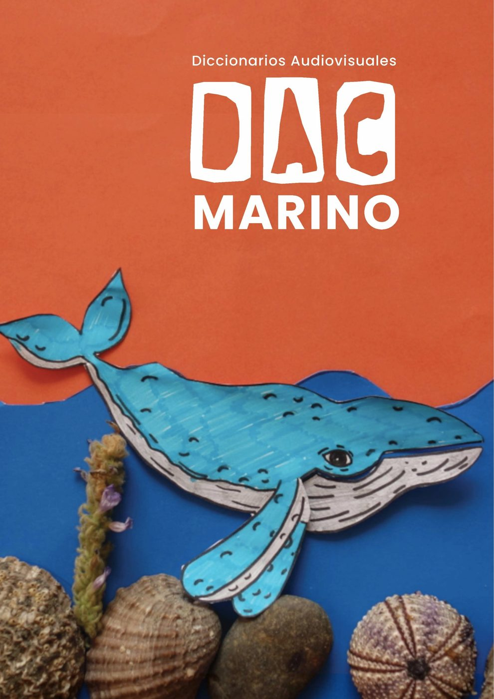
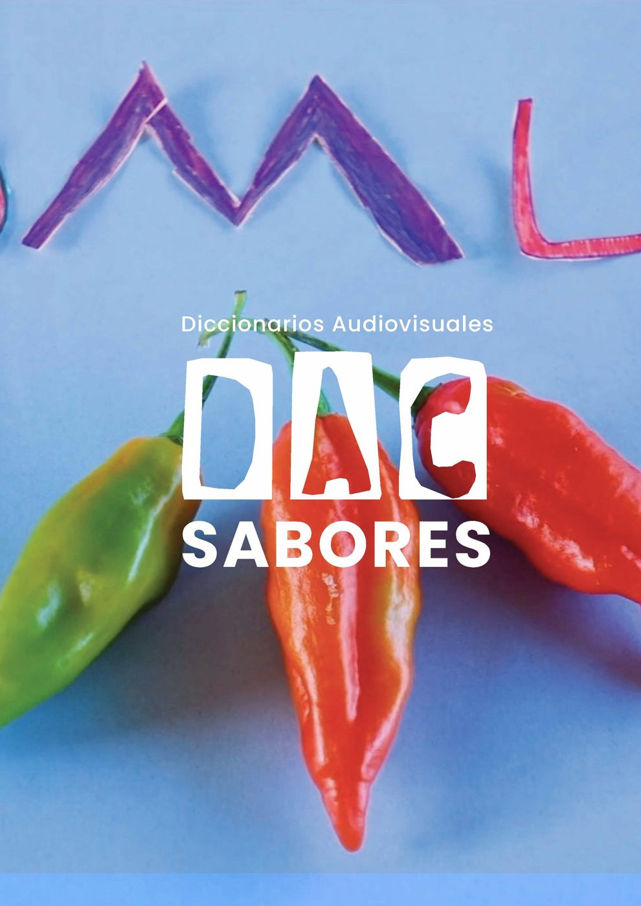
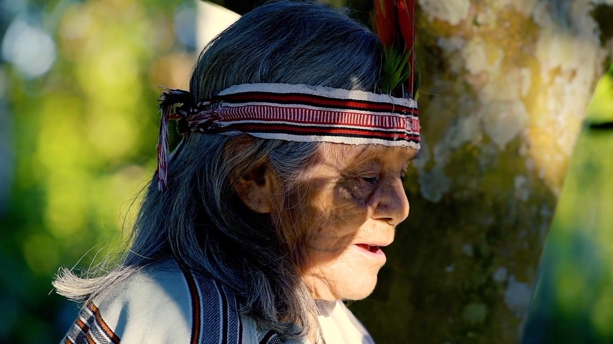
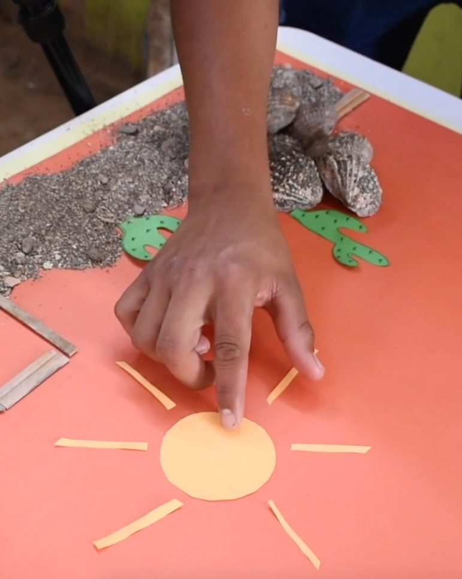
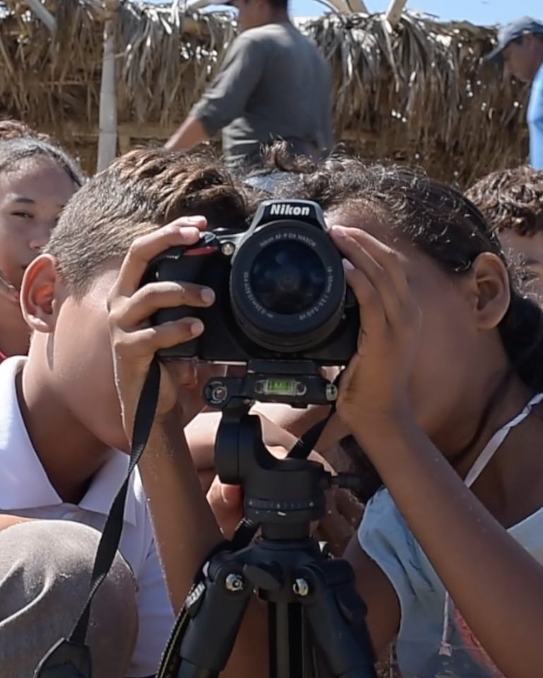
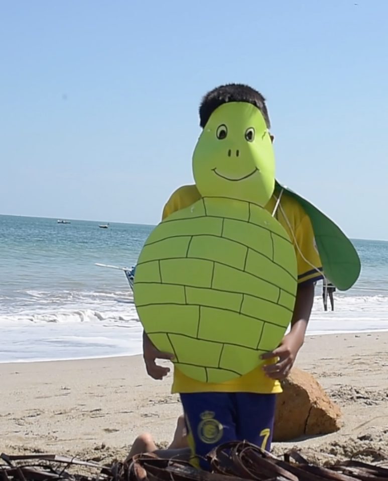
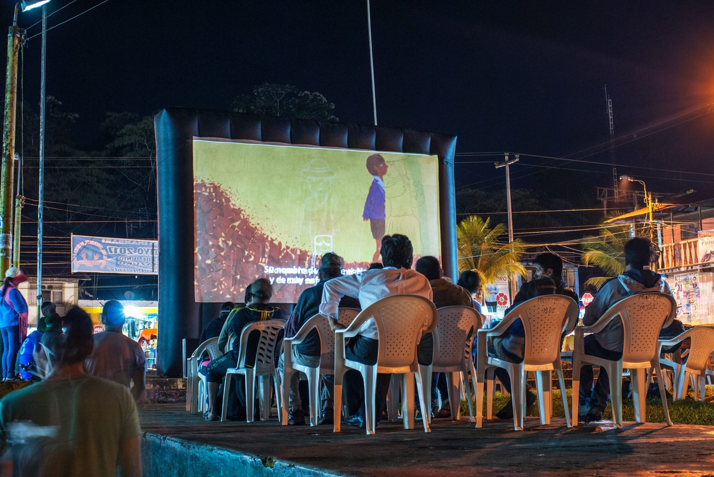
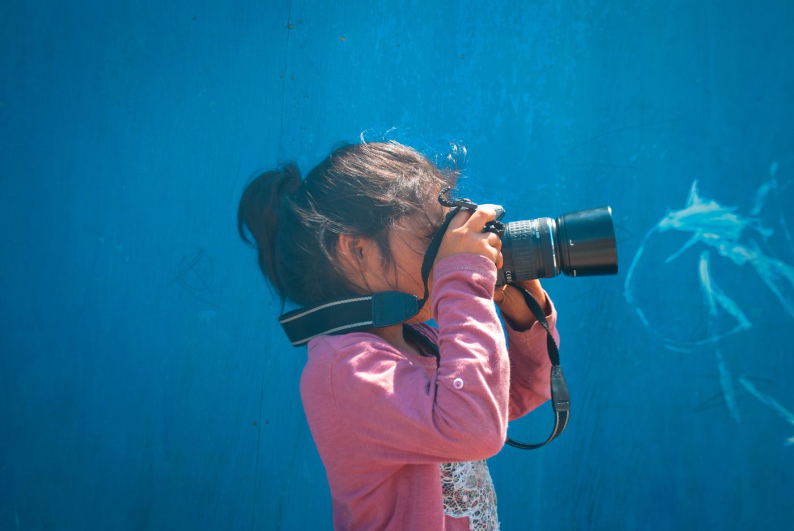
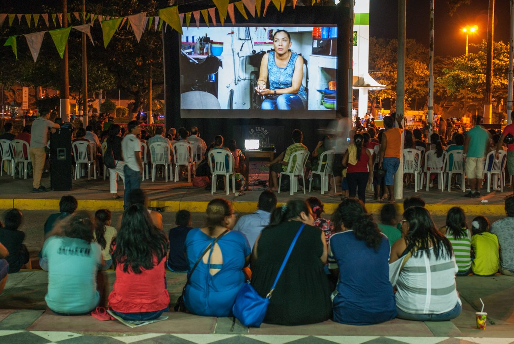

Metodologías
De creación audiovisual participativa.
A través de procesos de creación y espacios de encuentro, usamos el cine y el audiovisual para que las comunidades cuenten sus propias historias y para acercar a la ciudadanía a otras realidades. Trabajamos en tres grandes formatos, que se adaptan a cada territorio.
Talleres participativos en los que niñas, niños, adolescentes y personas adultas aprenden el lenguaje audiovisual y crean sus propias películas.
Una iniciativa cultural y educativa para preservar, transmitir y poner en valor los saberes, lenguas y memorias de cada comunidad. Un diccionario vivo, donde cada palabra, receta, especie, relato o concepto se convierte en una cápsula audiovisual de 2 a 3 minutos creada por la propia comunidad, con un enfoque comunitario, intergeneracional e intercultural.
Tiene distintos formatos: DAC Lenguas indígenas, DAC Marino, DAC Sabores y DAC Memoria.







Talleres y laboratorios audiovisuales sobre migración e integración comunitaria, para promover el diálogo intercultural, la convivencia y la prevención de la xenofobia. Con instituciones como la OIM, la Cruz Roja o ACNUR, creamos cortometrajes colectivos en los que participan tanto las comunidades de acogida como la población migrante y refugiada, en Perú y en países como España, México, Colombia, Ecuador y Bolivia.
Para comunidades rurales, distritos pequeños y territorios que quieren recuperar y fortalecer su memoria histórica, cultural y social. Adolescentes, jóvenes, niñas y niños, junto a personas adultas, investigan su territorio y crean un cortometraje colectivo con imágenes actuales y los relatos de la comunidad.
Si hay archivos fotográficos o audiovisuales del pueblo, se recuperan y se trabajan en el taller para unir pasado y presente. El proceso termina con una proyección en el propio pueblo, con pantalla inflable y cine al aire libre: un evento abierto que refuerza el encuentro y el sentido de pertenencia.

Para educadoras, mediadores culturales, gestores y agentes sociales que quieren incorporar el audiovisual participativo a su trabajo educativo y comunitario.
De creación audiovisual participativa.
Uso pedagógico del cine y el audiovisual.
Digitales y nuevas tecnologías aplicadas a procesos educativos.
Cómo diseñar y adaptar talleres a distintos contextos.

El espacio público convertido en un lugar de experiencia cultural compartida.
Plazas, parques, barrios, comunidades rurales y otros espacios públicos se transforman en salas de cine, con una pantalla inflable de gran formato (7 × 5 metros), equipo profesional de sonido y proyector. También llevamos las muestras a colegios e instituciones educativas, adaptando contenidos y metodologías.
Diseñamos ciclos temáticos: cine comunitario y rural, cine medioambiental, cine de derechos humanos y cine de género. Cada muestra es una experiencia completa, con cine-foros, diálogos y actividades participativas, para que el público no solo mire, sino que converse y se apropie del cine.
